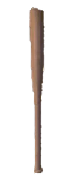

Товары в магазине:
После каждого раунда игроки приезжают в магазин,где за деньги заработаные во время раунда покупают товары,
товары делятся на 3 типа:улучшения, оружие и дроны
Улучшения:
Улучшение выносливости-Увеличивает запас выносливости на 10 единиц.

Улучшение скорости-Параметр позволяет быстрее ходить и бегать.

Улучшение дальности-Увеличивает дальность захвата.

Улучшение силы-Увеличивает силу поднятия на 1 единицу.

Улучшение здоровья-Увеличивает максимальный запас здоровья на 20 единиц.

Усиление радара- Показывает сколько осталось живых игроков на карте.

Дополнительный прыжок-Увеличивает максимальное количество прыжков на 1 единицу.

Усиление рывка-Позволяет делать рывок дальше.

Малая аптечка-Восстанавливает 25 единиц здоровья.

Средняя аптечка-Восстанавливает 50 единиц здоровья.

Большая аптечка-Восстанавливает 100 единиц здоровья.

Оружие:
Бейсбольная бита-Имеет 6 попаданий, пока его не потребуется перезарядить.
Вызывает кратковременное оглушение и сильный отбрасывающий удар.
Из-за сильного отбрасывающего удара большинство врагов получат 25 единиц урона при попадании.

Сковорода-Наносит 12-15 ударов без перезарядки. Наносит урон игрокам и монстрам, может сбивать с ног мелких врагов и игроков.
Кувалда-Имеет 6 ударов, прежде чем потребуется перезарядка.
Тяжёлое оружие, сила, по-видимому, не облегчает размахивание.
Меч-Имеет 10 зарядов, после чего требуется перезарядка.

Надувной молоток-Имеет 24 попадания без перезарядки.
Имеет 5% шанс вызвать взрыв, наносящий 250 единиц урона.

Транквилизатор-Имеет 3 заряда, после чего требуется перезарядка. Может оглушить любого противника на ~15 секунд.
Пистолет-Делает 6 выстрелов, прежде чем потребуется перезарядка.
Дробовик-Делает 3 выстрела без перезарядки. Выпускает в общей сложности 5 пуль, наносящих 50 единиц урона за выстрел.
Граната-Вызывает небольшой взрыв, который наносит урон ближайшим Монстрам.
Ударная граната-Вызывает небольшую ударную волну, которая отбрасывает ближайших Монстров.

Оглушающая граната-Вызывает светошумовую вспышку, которая оглушает врагов на срок до 15 секунд.

Человеческая граната-Вызывает небольшой взрыв, который наносит урон монстрам и игрокам.
Появляется только на чердаке Сервисной Станции.

Связка гранат-Вызывает небольшой взрыв, который затем запускает 3 Человеческие гранаты, нанося урон монстрам и игрокам.
Появляется только на чердаке Сервисной Станции.

Мина-Взрывается через 5 секунд после активации.
Ударная мина-Взрывается через 5 секунд после активации, Оглушает Монстра или игрока.

Электро капкан-При активации через 5 секунд начинает лететь в сторону монстра, поражая его электричеством и оглушая. Сам предмет, врезаясь во врага, может нанести 5 единиц урона, как при слабом ударе.
Резиновая утка-При броске с вероятностью 10% может отскочить и взорваться, нанося 250 единиц урона только противникам. При достаточной скорости наносит 50 единиц урона противникам при попадании. Слегка подпрыгивает в случайном направлении.

Дроны:
Дрон подзарядки-Может быть подключен к заряжаемому предмету для его подзарядки.
Обеспечивает заряд на 5 баров для любого заряжаемого предмета/ов. Теряет заряд при подключении к полностью заряженному предмету.

Дрон неразрушаемости-Может быть прикреплен к предмету, чтобы сделать его неразрушимым (как следует из названия), предотвращая повреждение предмета.

Дрон переката-Заставляет игрока / монстра / предмет катиться, когда он прикреплен.
При подключении к игроку вы будете двигаться в направлении, в котором смотрите.
Если прикрепить его к предмету, он будет катиться к вам (если он не слишком тяжёлый)
Прикрепившись к противнику, он оглушит его и отбросит от игрока.

Дрон пёрышко-Делает прыжок игрока немного выше и позволяет медленнее падать. Делает предметы и оглушенных монстров очень лёгкими.

Дрон нулевой гравитации-Позволяет игроку прыгать выше и падать медленнее. Также можно использовать для удержания предметов в воздухе.